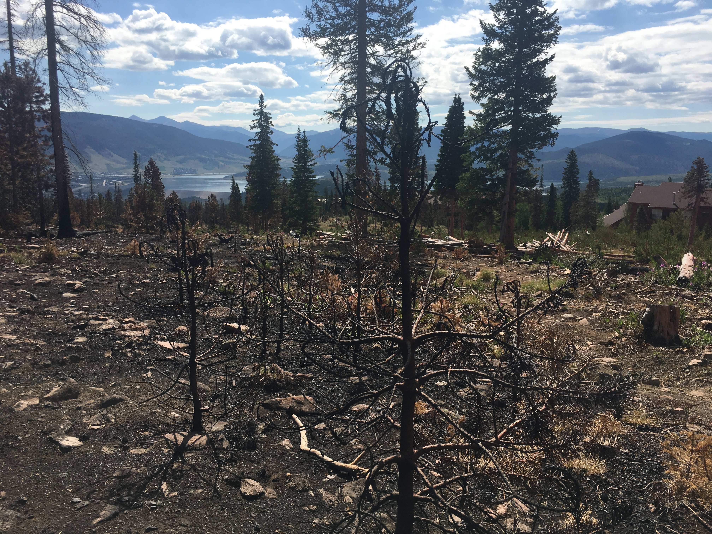

Firestorms can be caused anywhere, but mostly in hotter, dryer and more forested areas. As said before wild fires cause them, so they can appear anywhere a wildfire can. Like wildfires, they mostly occur during Summer and Fall. Summer being the hottest month and Fall being the month with the most fuel.
